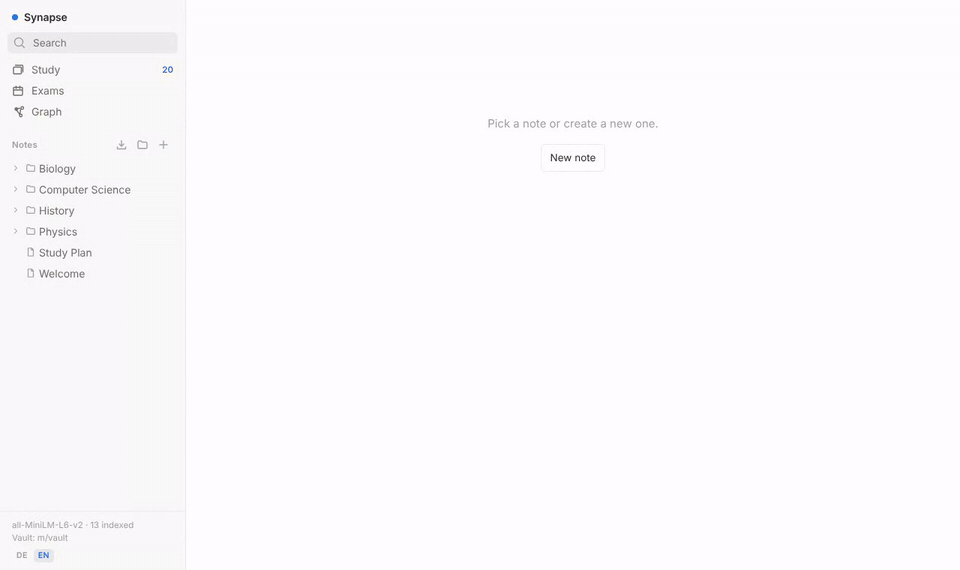
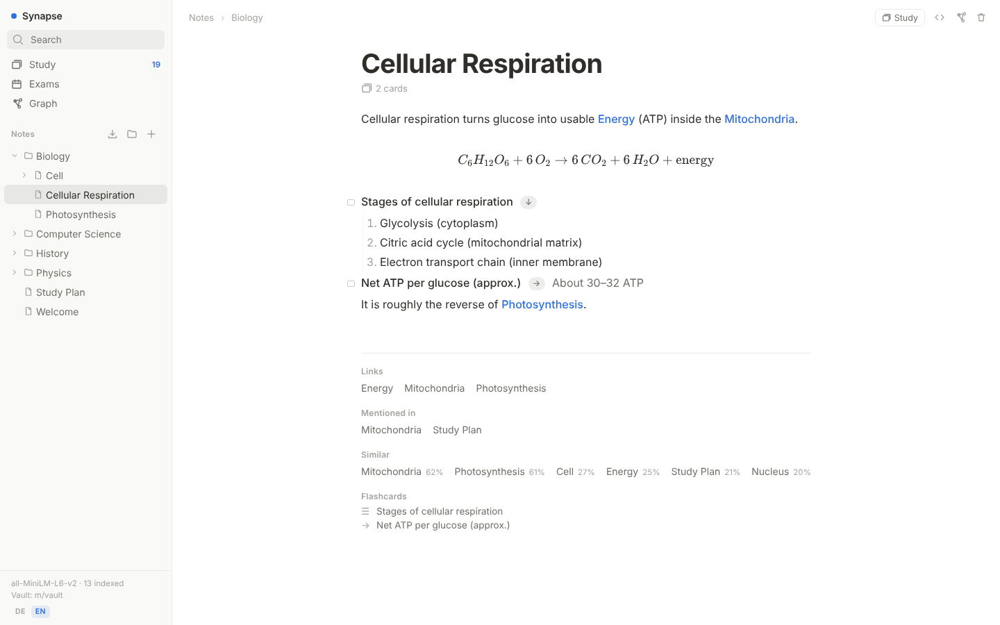
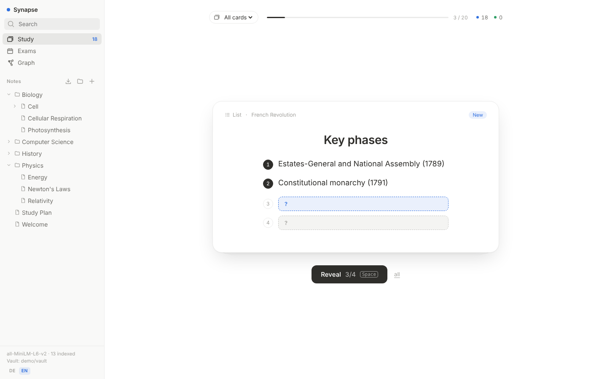
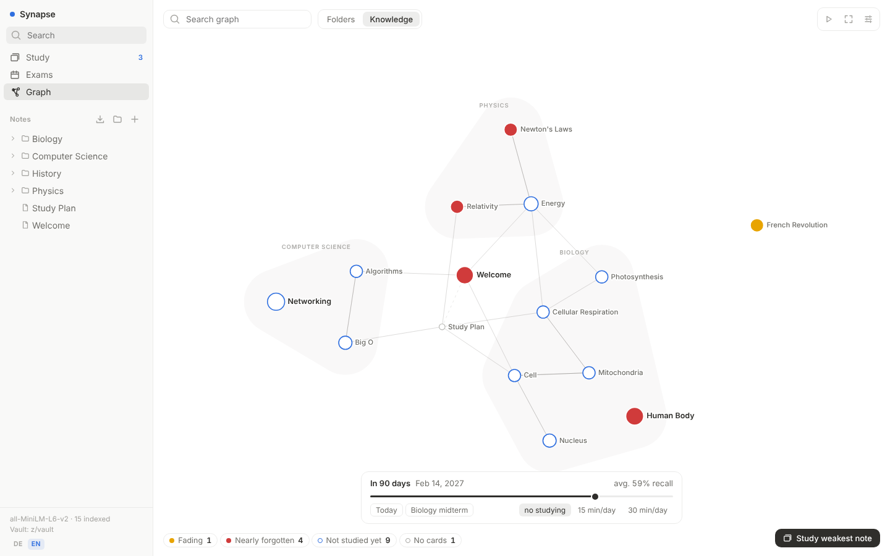
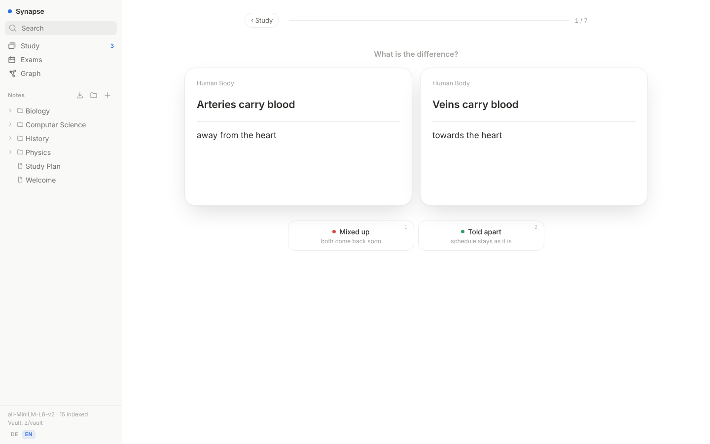

Synapse is one app for writing, remembering and connecting what you learn: a block editor like Notion, spaced repetition like Anki and a graph like Obsidian. It runs on your machine and stores everything as plain Markdown.
Free and open source (MIT). No account, no cloud, no telemetry.

A line like What is ATP? >> The cell's energy currency becomes a flashcard. So do definitions, lists you reveal step by step, cloze gaps and covered parts of an image.
/ menu, drag handles, tables, databases and diagrams
Cards are scheduled with FSRS, the algorithm behind modern Anki. Enter an exam date and Synapse spreads new cards over the days you have left and brings weak cards back before the exam.

A small AI model on your machine reads every note and links the ones about the same topic, so the graph fills in without manual linking.
Switch to the knowledge view and each note shows how well you remember its cards: solid, fading or nearly forgotten. Drag the time slider to exam day to see what will be left by then, with or without studying.

Synapse finds cards that are close in meaning but have different answers, like arteries and veins, and puts them side by side until you can tell them apart.
In explain mode the note is hidden and you write what you remember. You then see which passages you covered and which key terms you left out.

Every note is a .md file in a folder. Open it in Obsidian or any editor; changes sync both ways.
Notes, search and the AI model all run locally. Nothing is sent anywhere.
A built-in MCP server lets Claude and others read notes, write cards and quiz you.
C++ backend with SQLite and a vector index. Search and linking take milliseconds.
You need Docker. Works on Windows, macOS and Linux, including Apple Silicon and Raspberry Pi.
docker run -d --name synapse -p 127.0.0.1:8080:8080 -v ./synapse-data:/data ghcr.io/moritzjh/synapseThen open http://localhost:8080. The first start includes demo notes. Your data lives in ./synapse-data. Docker Compose and building from source are described in the README.